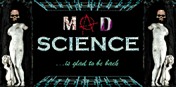
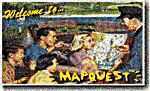
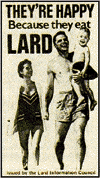

First International Virtual Conference on Mad Science
http://www.ftech.net/%7Emadsite/index.shtml
 "Mad science is a much maligned domain of human knowledge. Its practitioners have for too long been relegated to B-movies and remote ancestral estates," notes the site's introduction. IVCMS provides an international forum for the presentation, discussion and extension of research into the darkly powerful pseudosciences and dangerous technologies that fall beyond the scope of conventional science and good taste. We can't begin to describe some of the papers submitted to the site; you'll just have to read the deeply satirical takes for yourself. But consider a few of the acceptable topics outlined in the call for papers: "Creating Life to Satisfy Egocentric Motives," "Callous Disregard for Human Experimental Subjects" and "Exacting Bizarre Revenge on Contemptuous and Derisive Peers."
The JFK Assassination Pages
http://mcadams.posc.mu.edu/home.htm
John McAdams, a Marquette University professor, bucks the tide of conspiracy buffs on the 'net by not only stating that he believes that Lee Harvey Oswald acted alone, but by then providing back-up material to boot. His site offers what seems like a logical explanation for everything from the puzzling black umbrella to the Magic Bullet Theory, all in exhaustive detail. There's even an itemized timeline on Oswald's life and bios of all the major players.
SCHWA
http://www.theschwacorporation.com/
Aliens, do you know any? You may be surprised, say the folks at the Schwa Corporation; aliens may be walking among us and, more importantly, they may not be kind folk. Fortunately, Schwa markets a full line of protective gear in case of perilous alien contact, from an Xenon-coated Alien Detector to See-the-Past Viewers to a Car Conversion Kit that changes any standard auto into an official Schwa vehicle (to throw off the aliens, you see). Part art project, part commercial site and all in good fun, Schwa makes light of fears that visiting aliens might not be of the lovable-E.T. variety. No word if Agents Scully or Mulder are customers.
Texas Institute of Theory
http://ccwf.cc.utexas.edu/~bogo/tit/home.html
This esteemed school of music theory was started by none other than the fictional Volker Schlongdorff, best known for his work with "postal tonation," developed while working as a postal clerk in his native Latvia. Heavy in cerebral humor, TIT seems to grow almost daily. You must check out the Love Connection for Music Theorists -- classified ads designed to aid theorists with handy abbreviations for commonly used phrases (SWMT - Single White Male Theorist, PF - Personality Free, KAFP - Knows Allen Forte Personally). Like everyone else on the Web, Schlongdorff is running for president. His plan for reducing the deficit? Save money and natural resources by recycling old band instruments with the canned statement: "Read My Embouchure -- No New Saxes."
Dreamland
http://www.reed.edu/~mfagan/dreamland.html
Forget about Tarantino, Stone and Scorsese; in our eyes, the most original director working today may be John Waters. If you know him only from Cry Baby or Serial Mom, you don't know the half of it. Read up on Waters' entire body of work at this site. In addition to the highly detailed filmography, you'll find bios for his regular stable of performers such as Mink Stole, Ricki Lake, Patty Hearst and, of course, the late Divine. For example, did you know Divine was the first transvestite to portray Jackie Kennedy on film? Our only complaint -- no "Odorama."
Vagabond Monthly
http://www2.globaldialog.com/~tpatmaho/
Get your kicks as you coast through Americana road stories written by folks in search of asphalt fulfillment. This monthly 'zine features poetry, non-fiction and anecdotes on vehicular voyages from Schenectady to the Sierra Nevadas. Displayed in current and past issues, the tales are much cooler than Fodor's. Submit a story of your own and you may receive $25 and the glory of publication.
BONG Bull
http://www.au.com/bong/
Once available only via the Associated Press wire, the weekly newsletter of the Burned Out Newspaper Creatures Guild now resides on the Web. If you want to know the twisted thoughts of those inside the newspaper biz, head over to this address. Be sure to read the fabulous ongoing adventures of Ace, chief photographer for the Chagrin Falls, Ohio newspaper and his faithful companion, Typo The Wonder Pig. In each issue, you'll find a reference to Ace's trench coat, "a deathbed gift from an ancient, mystic, wire service executive editor on a fog-shrouded eastern island."
MapQuest
http://www.mapquest.com/
 Essentially an interactive atlas, MapQuest is one of those rare sites that mixes form and function. Since it's interactive, you can use MapQuest to chart your driving route from Redmond, Wash., to Naples, Fla. Or on a trip to Omaha, Neb., MapQuest can unearth the sushi restaurant closest to your hotel. And what do you know, we even found a cybercafe right around the corner from our office. If MapQuest could only figure out a way to jump start a dead battery, AAA would be obsolete.
The Gallery of the Absurd
http://omni.cc.purdue.edu/~royald/gallery.htm
 Sometimes well-intended efforts to sell a product result in horribly off-the-mark and unintentionally funny parodies of advertising. Webmaster Derek Royal pokes fun at such memorable marketing in this motley collection of occasionally unbelievable, but evidently authentic, ads, labels and the like. As part of his take on the grating perfect-life-for-sale attitudes adopted by many upscale catalogs, he offers commentary and a photo of the Annoying J. Crew Model of the Week. The site mocks all those guys who sat around tables "conceptualizing" only to produce banal fluff. We love that.
Nehring Bliss
http://www.ice.net/~nehring/index.htm
The home page of Nehring Bliss is an informational first stop in exploring the social implications of environmental disregard, thought crime, culture jamming, misplaced trust and a number of other politically dark hot topics. Although mostly compiled of unusual links,Bliss also offers essays such as "The Politics of Consciousness" and "The Illegal Search for Self Awareness" in his page titled "Thought Crimes and Unofficial Realities." Would-be anarchists, slackers, subversives and the just-plain curious should check out the work of Nehring Bliss, if only to create a better nation.